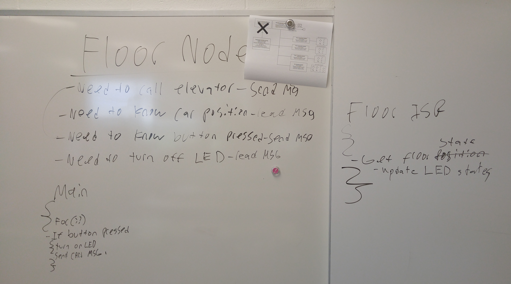
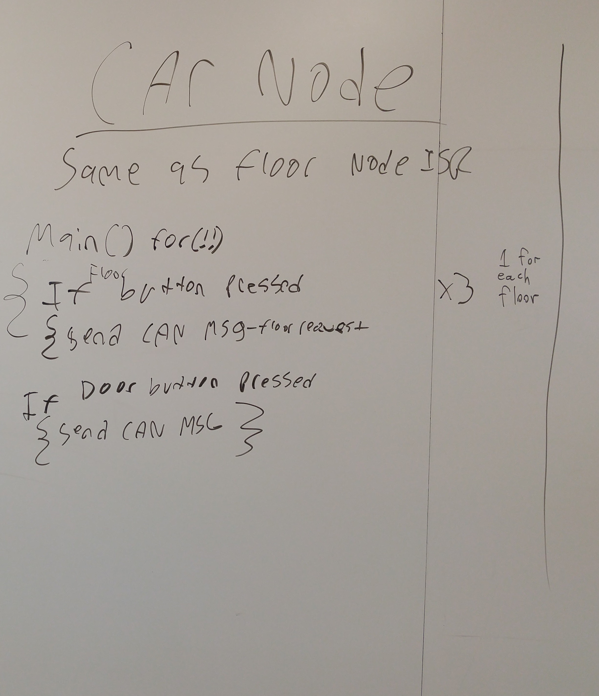
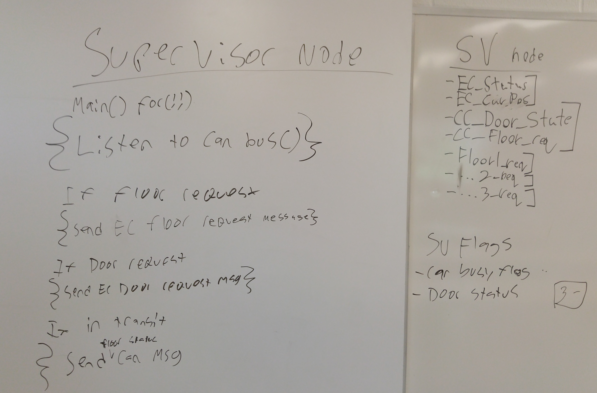
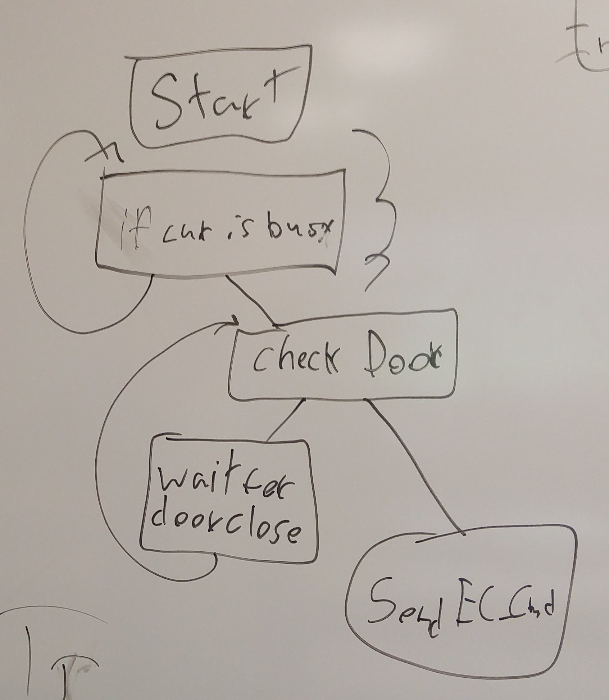

connected two pcans togather and used the included sofware to send messages between nodes. this was further tested to verify all connections to the node work on the bus.
Get prototype fuctions/ librareyies started and initaily tested
Week 2
Work Done
created CAN functions for initializing the CAN device, setting up listening channels, reading messages, and sending messages
tested loopback
agreeded on protocol as class
presented by tommy
started work on CAN elevator library
Work For Next Week
test and finish the elivator fuctions
Week 3
Work Done
debugged my fuctuions created last week
discused node state operations for the floor, car superviser(partialy),

picture of the design notes of the Floor Node

picture of the design notes of the Car Node

picture of the design notes of the Supervisor Node

picture of the design notes of the floor node
Work For Next Week
write the supervisor code
mostlikely written in python
help write and debug code related to the embedded nodes
floor node (1, 2, and 3)
car node
Week 4
Work Done
Papered out the logic for what command requires what response
Download and install tools for the supervisor controller
PCAN linux drivers to communicate for the vm to the bus
Wing IDE: for running and debugging my python code
Python library for PCAN interface
With the PCAN library and the uses of the python shell i was able to send messages to the bus where i was able to read them on the pcan viewer
With the PCAN library and the uses of the python shell i was able to receive messages from the bus sent from the the pcan viewer
Started to expand my python code to use classes and def more efficiently
Tested my supervisor code with pcan test results can be found on the wiki